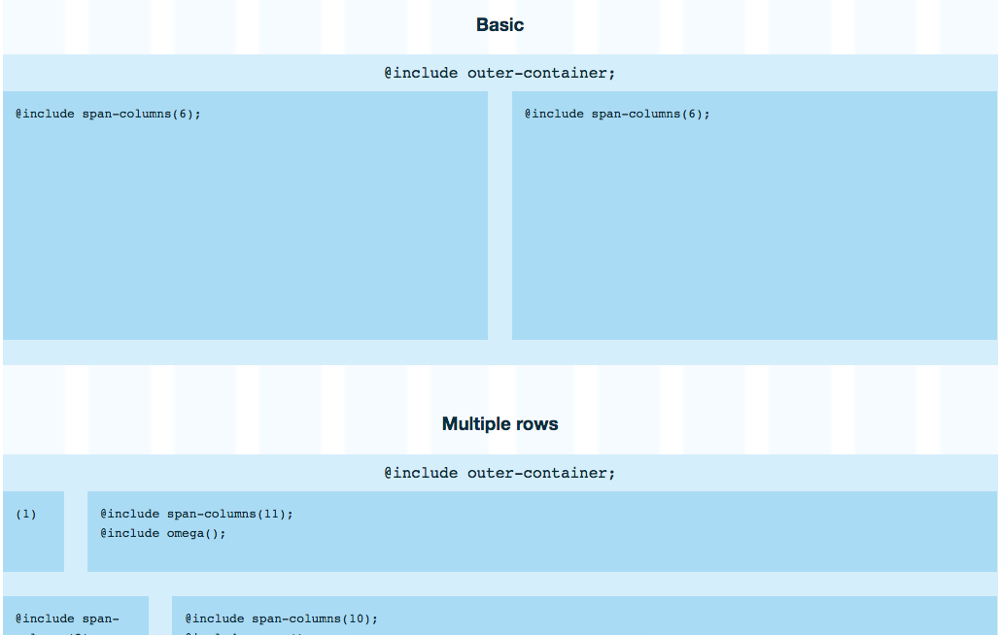
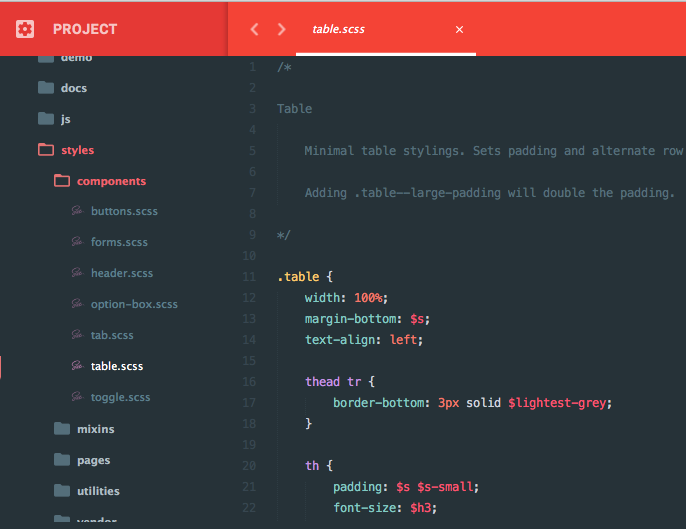
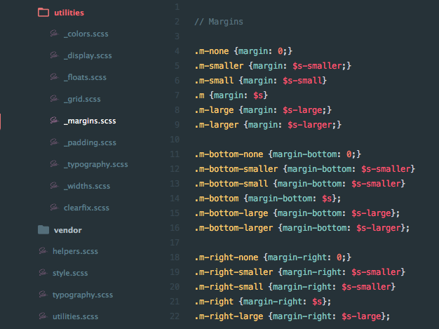

Our interfaces are just a collection of the same things on top of a shared visual style.
Proxima Nova for body text.
Generous spacing
This style will be set in a framework. Each app will only have to worry about loading the framework and then using its features to lay their pages out however they want quickly DreamHost style.
This will be accomplished using a combination of pre-packaged components and hyper-specific utility classes and is partially inspired by concepts like Solid, BaseCSS, and SuitCSS, though scaled back and simplified for our specific use cases.
The visual style is handled on a global level, so UX designers and front-end developers don't need to continuously reconsider implementation details and can instead focusing on creating consistent pages quickly.
Typography will have margins set according to a scale and used with HTML5 sectioning. For interface elements, margins will be applied manually to reduce unsetting of spacing styles.
An interface should be as simple and predictable as possible. This will be ensured by mapping all classes, components and mixins to the same variables.
Ensure no numbers, colours or fonts are outside of _variables.scss. Page-specific .scss files are for mixins and responsive page layouts.
Using Bourbon's Neat allows us to scaffold our application using a minimal amount of meaningful names and then attach a responsive grid to it in your css file.
Most of DreamHost's interfaces can be broken down into the same components being used over and over again in different ways. (tables, boxes, forms, navs, buttons, etc.)
When something is being used in multiple places in different contexts, it can be proposed to be turned into a component. Components can be identified by their BEM-style notation (except tables and lists).
Because all components and utility classes limit nesting and reference the same variables, it's trivial to add a component and then convert the individual implimentations over after.
Use utility classes if a part of your application needs to adjust a font size, margin, padding or colour.
This eliminates ambiguous classes and non-repeatable elements. Troubleshooting will be improved with everything having one single point of truth.
When writing new code, there are certain rules that must be followed to esure we don't add technical debt and code bloat to this system.
Certain exceptions may apply to all rules of course but please check with the entire team before adding any and document heavily.